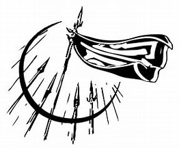

Kaladin es ahora un esclavo en una caravana, esperando a ser vendido y
luchando por conservar su capacidad de no pensar como un esclavo.
Cuando otro esclavo le plantea la posibilidad de escapar, Kaladin le dice bruscamente que no tiene intención
de hacerlo
porque nunca lo logrará. Un segundo esclavo se acerca a Kaladin y le pregunta cómo llegó allí.
Cuando Kaladin no responde, los otros hombres cuentan sus historias. Con el tiempo se descubre que Kaladin
mató a un hombre,
pero la razón por la que es esclavo es que no mató a otro.
